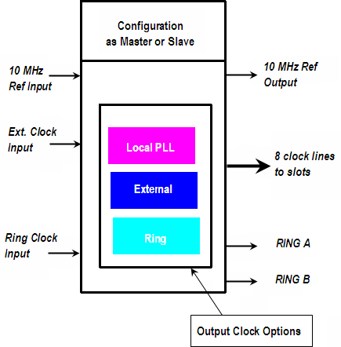
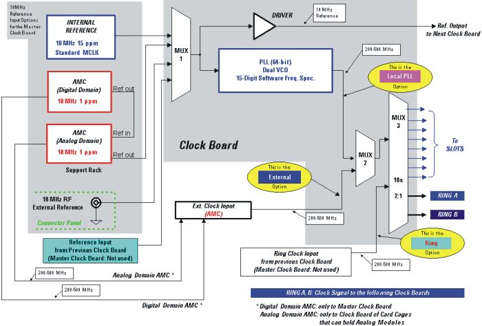

Clock board clock generation and distribution
The main task of the clock board is to generate the master clock (MCLK) for the Smart Scale test system. The master clock is used as a reference for all timing signals within the test system.
The clock board is automatically configured, depending on the card cage it is installed in.
The simplified block diagram of the clock board below shows essential input and output connections, clock generation and routing options.

One clock board in the test head acts as the master clock. The master clock board's ID in a test head is always 11. All other clock boards act as slave clock boards.
There are three modes of operation of a clock board which determine how to send clock signals to the test head cards installed in the card cage and how to forward signals to the clock board in the next card cage:
- Local PLL
This is the mode where a clock board operates as the master. The board generates the clock signal with the on-board Phase Locked Loop.
- External
This is the mode where a clock board accepts an external signal generated by an AMC (Alternate Master Clock). This is a high accuracy, high stability 10 MHz RF signal and it is fed to the External Clock Input of the Interconnection Panel. This way the test system operates in synchronization with an external 10 MHz RF clock. The AMC clock signal for the digital clock domain can only be fed to the master clock board. The master clock board forwards it through its Ring A/B outputs. The AMC clock signal for the analog clock domain can only be made to the clock boards in card cages containing analog cards.
- Ring
This is the mode to forward the Ring Clock Input signal used by slave clock boards.
For information on how to switch between Internal Clock (Local PLL) and External Clock in the Model file see REFERENCECLOCK in ETC section.
The figure below shows a block diagram of the clock board, its input and output lines and the routing of the clock signals on the clock board. It also shows the options for providing the 10 MHz reference signal to the master clock board.

The clock distribution within a card cage is realized by a low-skew star-distribution. This way each slot has a separate clock line directly fed from the clock board in that card cage.
Additional Information on 10 MHz External Input
With R.7.2 the 10 MHz External Input requires an RF sinusoidal signal in place of TTL square wave signal used previously. This allows for better synchronization with an external clock source. For signal specifications refer to table Reference clock input in Miscellaneous characteristics. Existing systems can be upgraded from TTL to RF. The relevant information can be found in Service Note E8001-275 Upgrading from 10 MHz TTL to 10 MHz RF.
Functional changes
- Introduced before SmarTest 6.3.2
- SmarTest 6.5.4: CTH with DUT Scale interface introduced
- SmarTest 7.1.0: A-test head introduced
- SmarTest 7.2.0: 10 MHz External Input requires an RF sinusoidal signal instead of a TTL square wave signal